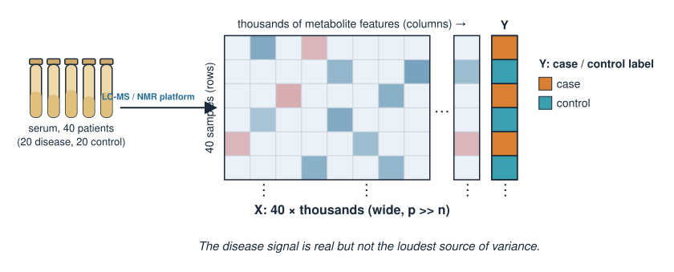
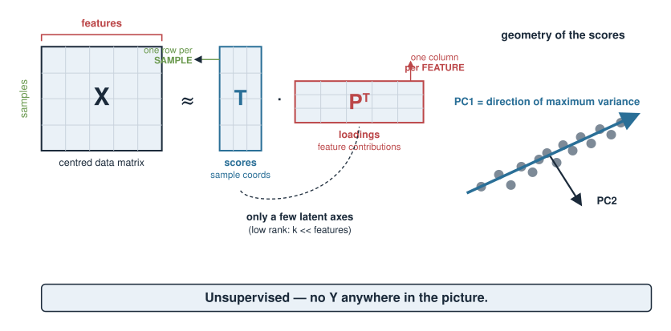
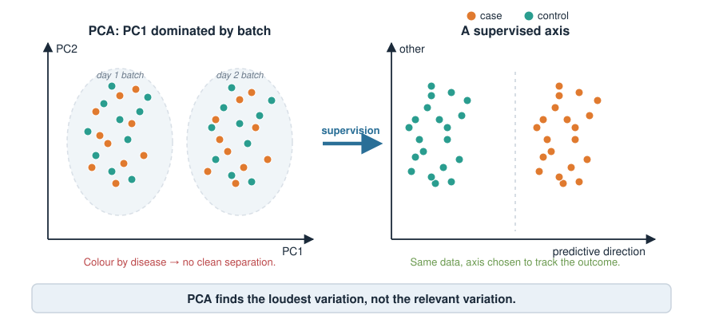
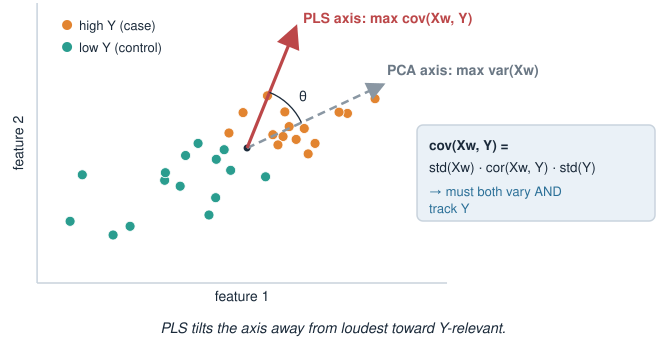
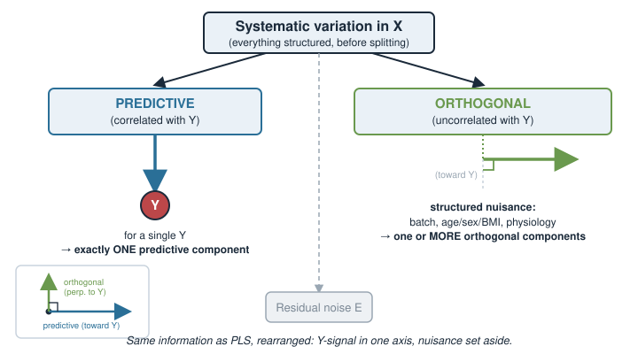
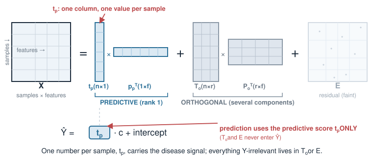
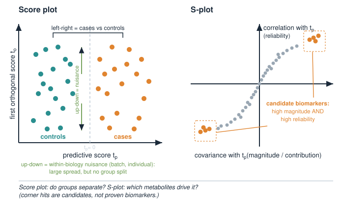
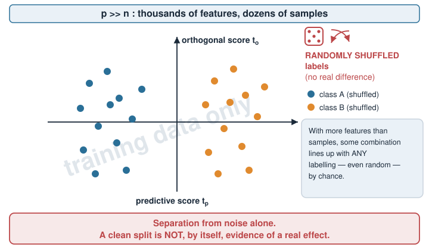
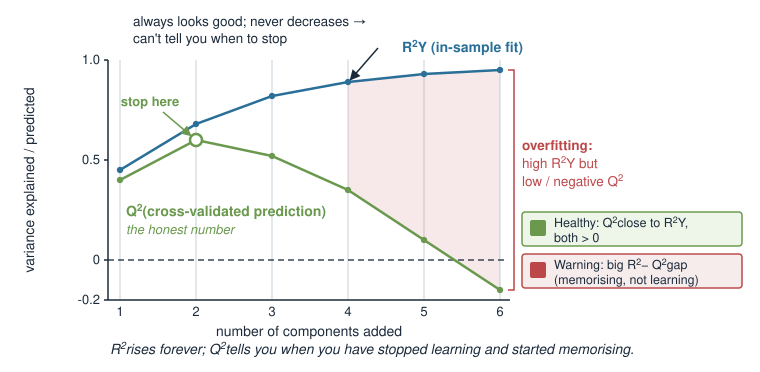
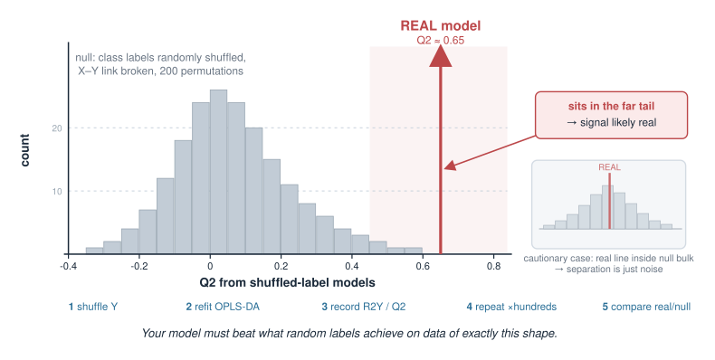

In PCA we found the directions of greatest variation in a data matrix \(X\) — a purely unsupervised view that never looks at any outcome. Today we bring the outcome back in.
Why PCA can miss the biology: its biggest axis may be a batch effect, not your disease.
PLS: find directions in \(X\) that covary with an outcome \(Y\) (supervised latent variables).
OPLS: split \(X\)-variation into a predictive part (correlated with \(Y\)) and an orthogonal part (structured noise — batch, instrument, physiology).
Why this split makes a model easier to interpret, and where it is standard (metabolomics).
The catch: supervised models can fit noise, so we must validate honestly.
This is a concept day. The goal is to know what OPLS does, when to reach for it, and how not to fool yourself. Light math, heavy intuition.
A biology picture first
A metabolomics study: serum from 40 patients, 20 with a metabolic disease and 20 healthy controls. An LC–MS or NMR platform measures thousands of metabolite features per sample.
The question is simple: which metabolites separate cases from controls?
But the measured variation is dominated by things you did not ask about:
samples run on different days / different instrument batches,
age, sex, BMI, diet differing between individuals,
baseline physiological spread that has nothing to do with the disease.
The disease signal is real but not the loudest thing in the data. We need a method that listens for the outcome, not just the loudest source of variance.

Recap: what PCA gives us
PCA takes the (centred) data matrix \(X\) and returns latent axes ordered by variance:
Scores\(T\) — coordinates of each sample on the new axes,
Loadings\(P\) — how each feature contributes to each axis,
reconstruction \(X \approx T P^\top\), with the first axes capturing the most variance.
\[\text{PC 1 = direction of maximum variance in } X.\]
PCA is unsupervised: it never sees any outcome \(Y\). It answers “what varies most?” — a fine question, but not“what varies with the disease?”

The problem: PCA can point the wrong way
In our serum study, suppose the batch (day 1 vs day 2) creates more spread than the disease does. Then:
PC1 aligns with batch, not case/control,
the disease difference hides in some later, smaller component — or is smeared across several.
You plot PC1 vs PC2, colour by disease, and see… no clean separation. Not because the biology is absent, but because PCA optimised for the wrong thing.
PCA finds the loudest variation. It has no reason to care that your loudest variation is a nuisance.

Bring in the outcome: supervision
Attach the response we care about as a vector (or matrix) \(Y\):
regression flavour:\(Y\) is a quantity — e.g. a drug dose, a bioactivity value;
classification flavour:\(Y\) encodes a class — e.g. case \(=1\), control \(=0\) (this is OPLS-DA, discriminant analysis).
Now ask a supervised question:
\[\text{find directions in } X \text{ that are useful for } Y.\]
Instead of maximising variance in \(X\) alone, we bring \(X\)and\(Y\) into the objective. That single change turns PCA into PLS.
PLS: directions that covary with Y
Partial Least Squares. PLS builds latent components \(t = Xw\) as linear combinations of the features, choosing the weights \(w\) so the component has maximum covariance with \(Y\):
\[\max_{\|w\|=1}\ \operatorname{cov}(Xw,\ Y).\]
Contrast with PCA, which maximises \(\operatorname{var}(Xw)\) alone.
Covariance = variance and correlation-with-\(Y\) together, so a PLS component must both vary and track \(Y\).
After extracting one component, PLS removes it from \(X\) (deflation) and finds the next — giving several ordered components, like PCA but \(Y\)-aware.

Scores and loadings, again
PLS keeps the same two-part vocabulary as PCA, now \(Y\)-aware:
Object
Meaning
Lives in
Scores\(t\)
each sample’s coordinate on a latent component
sample space
Loadings / weights
how each feature contributes to that component
feature space
Score plot → do the samples (cases vs controls) separate?
Loading plot → which metabolites drive that separation?
A latent component is still just a weighted combination of the original features — a new “meta-feature” — only now the weights are chosen with \(Y\) in view.
The OPLS idea: split the variation
PLS mixes two kinds of \(X\)-variation inside its components: variation that relates to \(Y\), and variation that is large but irrelevant (batch, physiology). That makes components hard to read.
OPLS (Orthogonal PLS) adds one idea: separate them.
\[\underbrace{\text{variation in } X}_{\text{systematic part}} = \underbrace{\text{predictive}}_{\text{correlated with } Y} \ +\ \underbrace{\text{orthogonal}}_{\text{uncorrelated with } Y} \ +\ \text{residual noise}\]
Predictive variation → put it in one component (for a single \(Y\)) that carries the \(Y\)-related signal.
Orthogonal variation → structured, but uncorrelated with \(Y\); parked in separate orthogonal components.

What is “orthogonal variation”?
Orthogonal variation is real, structured signal in \(X\) that has nothing to do with \(Y\). In the serum study it might be:
instrument / batch drift between run days,
age, sex, BMI, diet differences between individuals,
baseline physiological differences unrelated to the disease.
It is not random measurement error — that lands in the residual. It is systematic nuisance that PCA would happily rank first.
OPLS says: keep it, but keep it separate — do not let it contaminate the axis you use to interpret the disease.
The OPLS decomposition
For a single response \(Y\), OPLS factorises \(X\) as
and predicts \(Y\) from the predictive score only:
\[\hat Y = t_p\, c + \text{(intercept)}.\]
\(t_p\) — the predictive scores (one per sample): the samples’ position along the \(Y\)-related axis.
\(T_o, P_o\) — orthogonal scores and loadings: the nuisance structure, set aside.
\(E\) — residual.
So a single number per sample, \(t_p\), carries the disease signal; everything Y-irrelevant is elsewhere.

Reading an OPLS-DA model
The standard plot: predictive score \(t_p\) on the x-axis vs the first orthogonal score \(t_o\) on the y-axis.
Left–right (predictive axis): cases vs controls should separate horizontally.
Up–down (orthogonal axis): spread that is within the biology — batch, individual variation — but does not separate the groups.
To find which metabolites drive the separation, metabolomics often uses an S-plot: for each feature, plot its covariance with \(t_p\) against its correlation with \(t_p\). Features in the extreme corners are the strong, reliable discriminators.

When to prefer OPLS
Situation
Reach for
Explore structure, no outcome in mind
PCA
Loudest variation is your biology
PCA is fine
Outcome known; nuisance variation large
PLS / OPLS
Many correlated features, wide matrix (\(p \gg n\))
PLS / OPLS
Want the \(Y\)-signal in one interpretable axis
OPLS
OPLS vs PLS: essentially the same predictive power — OPLS just rotates the solution so interpretation is cleaner (one predictive axis, nuisance set aside).
OPLS vs PCA: use OPLS when you have an outcome and PCA’s top axes are dominated by things you don’t care about.
The catch: supervision can fit noise
The moment we let \(Y\) steer the axes, we gain a new danger PCA never had: with thousands of features and dozens of samples, a supervised model can separate the groups even when there is no real difference.
With \(p \gg n\), some linear combination of features will line up with any labelling — including a random one — by chance.
A beautiful case/control separation on the training data can be pure overfitting.
An OPLS-DA score plot that cleanly splits your groups is not, by itself, evidence of a real effect.

Validate honestly: R², Q²
Two numbers report the model’s fit and its generalisation:
\(R^2\) — variance explained on the data used to fit (\(R^2X\), \(R^2Y\)). Always looks good; rises as you add components.
\(Q^2\) — variance predicted under cross-validation (hold out samples, predict them). This is the honest number.
Healthy model: \(Q^2\) close to \(R^2Y\), both clearly above 0. Warning sign: high \(R^2Y\) but low or negative \(Q^2\) → the model fits the training data but does not generalise — overfitting.

Validate honestly: the permutation test
The strongest simple check: break the link between \(X\) and \(Y\) on purpose, many times.
Randomly shuffle the class labels \(Y\).
Refit OPLS-DA and record \(R^2Y\) and \(Q^2\).
Repeat hundreds of times to build a null distribution.
Compare your real model against that null.
If the real \(Q^2\) is not clearly better than what shuffled labels achieve, your separation is noise. If it sits far out in the tail, the signal is likely real.

OPLS in R (sketch)
The Bioconductor package ropls fits PCA, PLS(-DA) and OPLS(-DA) with built-in cross-validation and permutation testing.
library(ropls)# X: samples x metabolite-features matrix y: factor (case / control)model <-opls(X, y,predI =1, # 1 predictive component (single response)orthoI =NA, # let CV choose the number of orthogonal compspermI =200) # 200 permutations for the validation testmodel # prints R2X, R2Y, Q2 and the permutation p-valuesgetScoreMN(model) # predictive & orthogonal scores (the score plot)getLoadingMN(model) # feature loadings (which metabolites)plot(model, typeVn ="x-score") # the t_p vs t_o score plot
Read the printed \(Q^2\) and permutation p-values before you trust any score plot.
Summary
Idea
Key point
PCA
unsupervised; maximises variance, ignores \(Y\)
PCA pitfall
top axis may be batch/nuisance, not your biology
PLS
supervised; maximises covariance of \(Xw\) with \(Y\)
Scores / loadings
samples’ coordinates / features’ contributions (as in PCA)
OPLS
splits \(X\) into predictive (\(Y\)-correlated) + orthogonal (nuisance)
Predictive score \(t_p\)
one axis carrying the \(Y\)-signal — the interpretable one
OPLS vs PLS
same prediction, cleaner interpretation (a rotation)
Home field
metabolomics — wide, collinear, nuisance-heavy data
The danger
with \(p \gg n\), supervision can separate noise
Honesty
trust \(Q^2\) + permutation test, not a pretty plot
Next (Multiome data integration): these latent-variable ideas applied across omics layers. Optional, under Extra material: Chemometrics applies them to spectra.